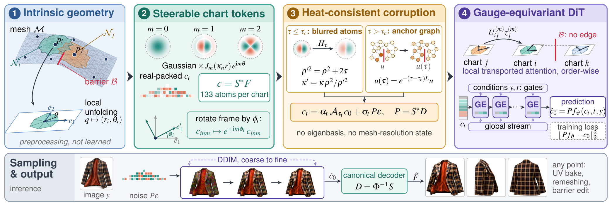
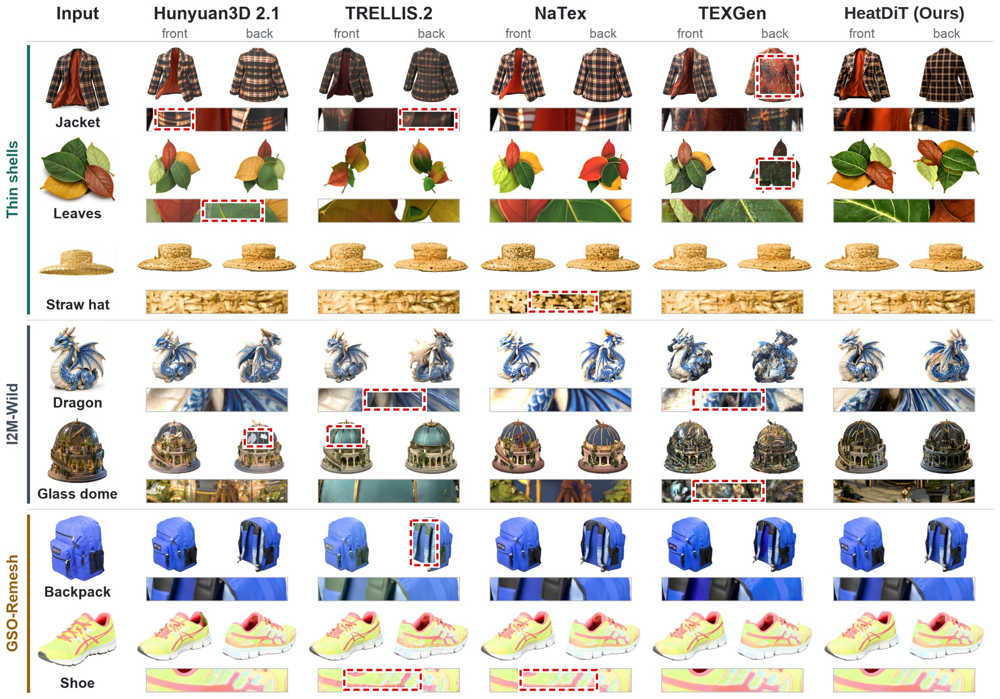
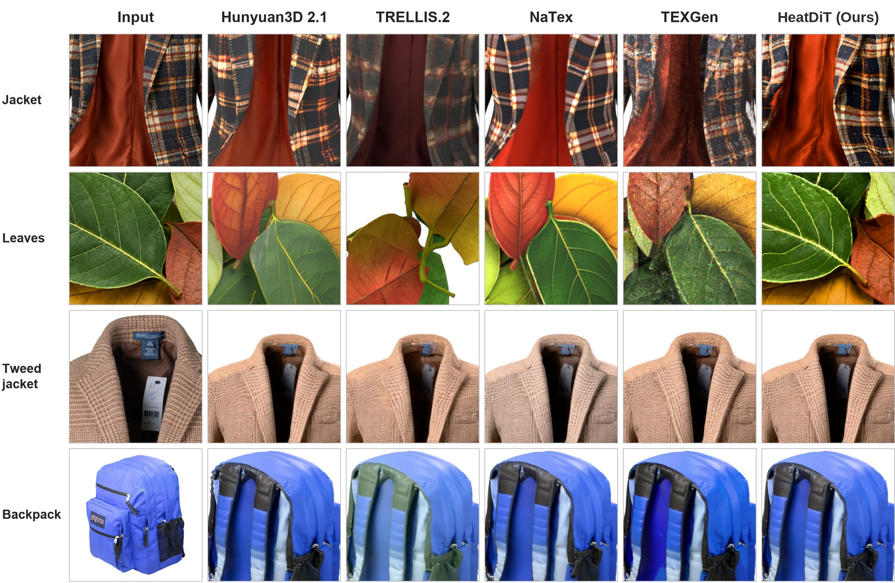

Under review
Intrinsic Texture Diffusion with Heat-Closed Chart Tokens
New York University Abu Dhabi
* equal contribution
Meshes from image-to-3D generators and scanners rarely have a usable UV atlas, and they are full of thin shells and touching parts. Multi-view baking must inpaint what the views miss, and native 3D latents use Euclidean neighbourhoods that blend the two sides of a thin shell. We present HeatDiT, a texture diffusion model whose state lives on the surface.
Its chart tokens are the inner products of the texture with Gaussian-windowed Fourier–Bessel atoms on overlapping geodesic charts. They are local and exactly steerable within each chart, and on flat charts the atoms are closed under heat flow. The tokens of a heat-blurred texture are therefore inner products with analytically blurred atoms. This yields a coarse-to-fine forward process that is consistent with surface heat flow and needs no eigenbasis. A gauge-equivariant transformer denoises the tokens.
On image-to-mesh texturing, HeatDiT matches or improves on strong baselines on overall metrics and is clearly better in occluded and thin regions, where it roughly halves the colour leaking between separable layers. The gains persist against other surface states trained with the same data and conditioning, and the forward process matches mesh-resolution heat diffusion at a fraction of its sampling cost.



@misc{he2026heatdit,
title = {HeatDiT: Intrinsic Texture Diffusion with Heat-Closed Chart Tokens},
author = {He, Zhewen and Hu, Junyi and Fang, Yi},
year = {2026},
note = {Preprint}
}